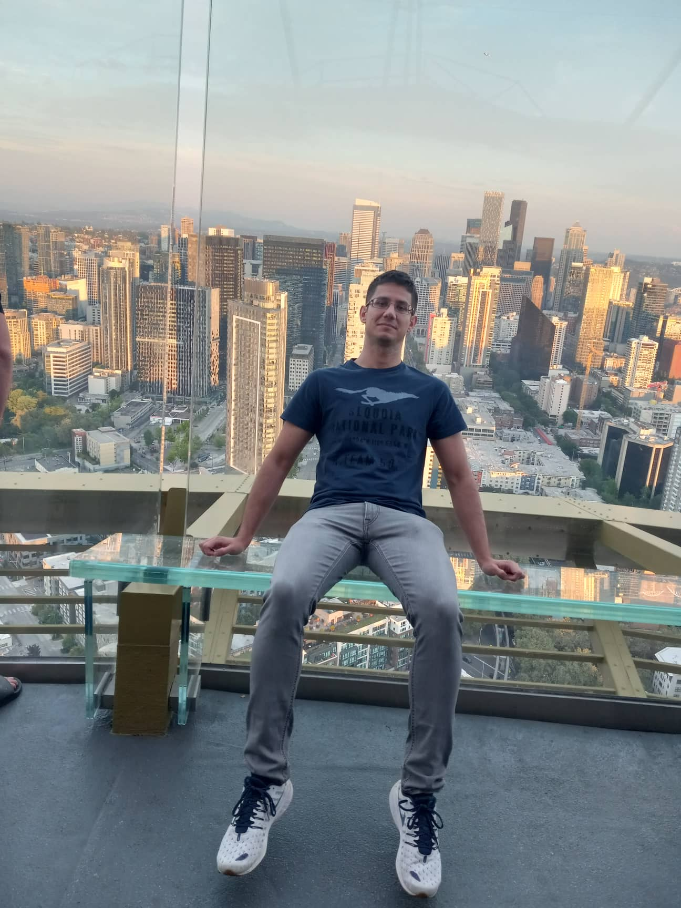
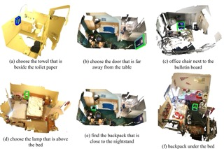
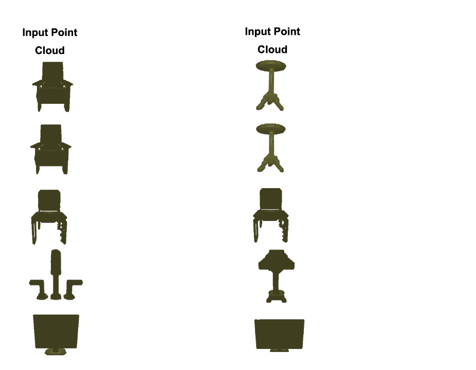
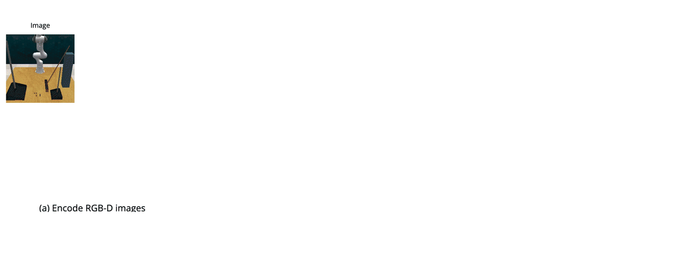
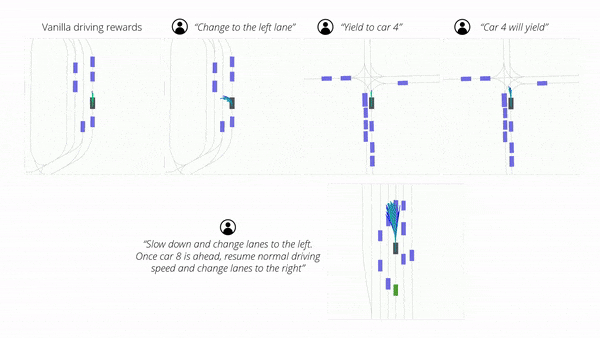
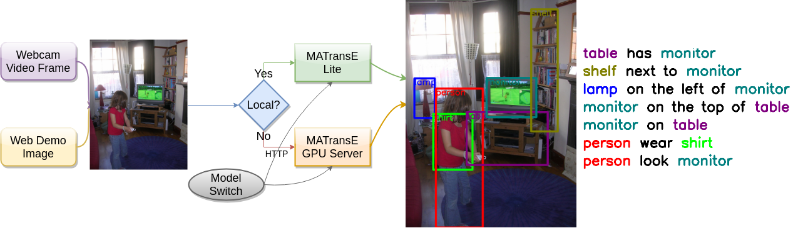

Nikos Gkanatsios
Learning-Based Autonomy for Physical and Virtual Agents
Next-Generation Embodied Intelligence • Generative Decision Models • Multimodal Perception
PhD in Robotics, Carnegie Mellon University • Advised by
Katerina Fragkiadaki
Autonomy Research & Production Systems (Tesla • NVIDIA)
Research & Publications
My research progresses from representation learning to generative decision intelligence and scalable autonomy learning.
Research Impact Ladder
Perception and Multimodal Representation
Vision-language models for grounded scene understanding.

Spatial Representation and Geometry-Aware Learning
Learning structured spatial representations for reasoning and control.

Generative Decision Intelligence
Transforming spatial-semantic representations into generative policy and planning models.


Enabling Scalable Real-World Autonomy
Learning paradigms for next-generation embodied intelligence.


Older Works
Graph-Structured Semantic Scene Understanding

Industry Research & Systems Impact
Research and engineering contributions spanning scalable autonomy learning, generative decision modeling, and production deployment of learning-based autonomous systems.
Tesla — Senior Autopilot Machine Learning Engineer
Sep 2025 — Feb 2026
- Contributed to post-training policy optimization strategies using large-scale fleet data for real-world driving adaptation and behavioral refinement.
- Designed data selection and curation strategies supporting scalable policy learning pipelines.
- Worked within production-scale training, evaluation, and deployment workflows for autonomous driving systems.
NVIDIA — Research Intern, Robotics & Generative Modeling
Jun 2024 — May 2025
- Developed flow-based generative methods for 3D manipulation policy learning using spatial scene representations.
- Improved efficiency of 3D policy learning through distributed training optimization and dataset pipeline engineering.
Deeplab — Machine Learning Engineer
Jul 2018 — Jul 2020
- Developed multimodal scene understanding models for graph-structured semantic perception.
METIS Cybertechnology — Artificial Intelligence Engineer
Mar 2017 — Jul 2018
- Developed production NLP and intelligent assistant systems with end-to-end ML pipeline ownership.